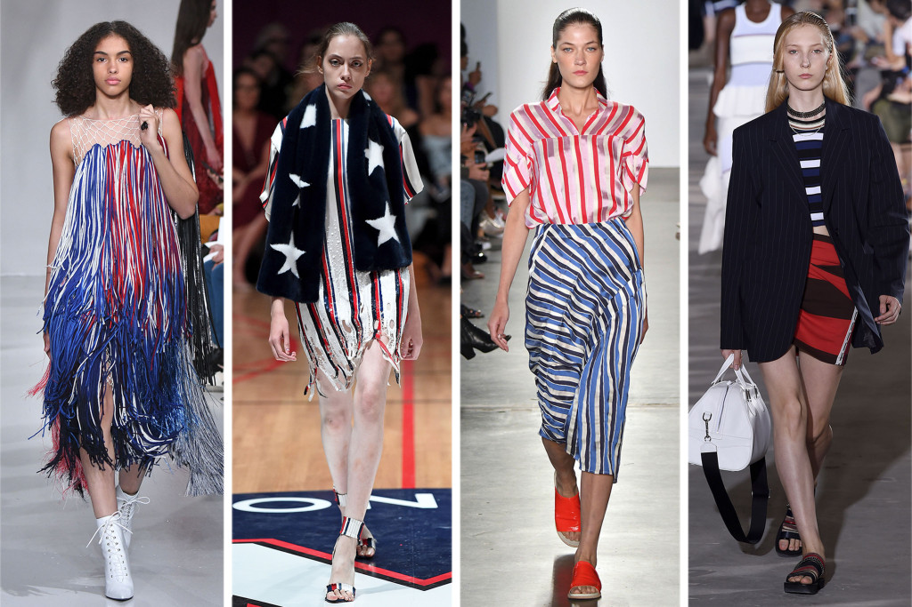
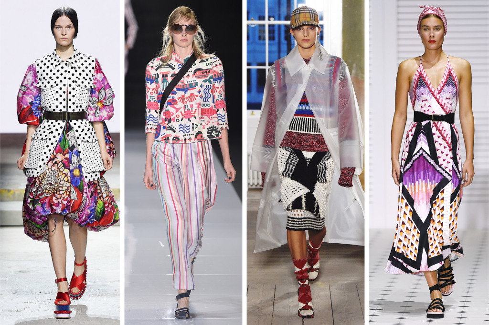
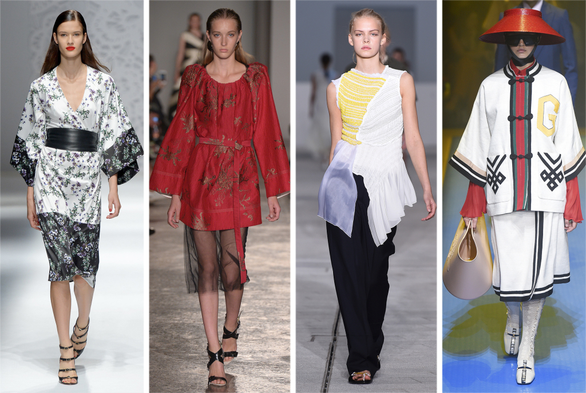
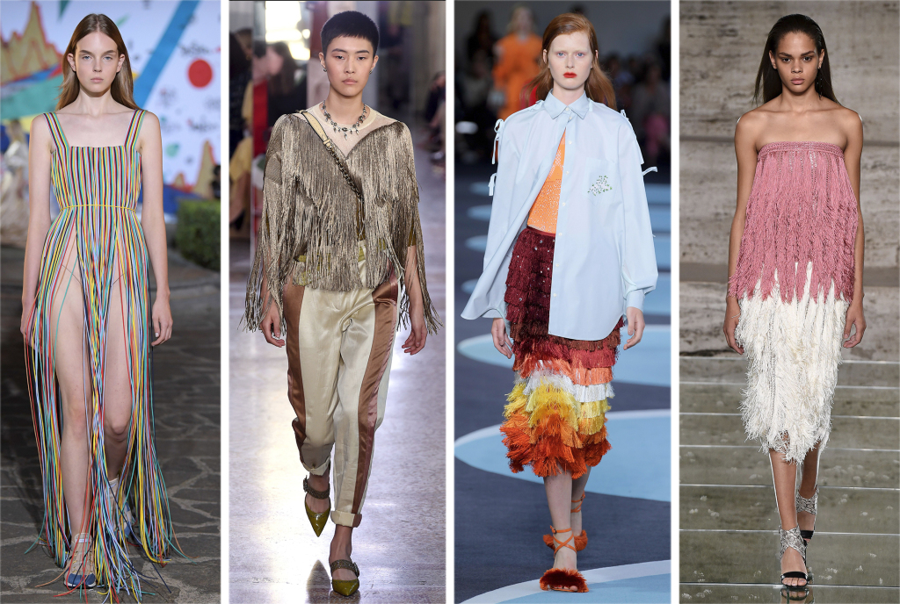

Spring 2018 from New York Fashion Week :Americana

Raf Simons spoke about the American dream,
which he depicted his own particular way; while Laura Kim and Fernando Garcia’s was a cheerful,
spirited rally with tons of stripes and stars in between from Self-Portrait.
Spring 2018 from London Fashion Week: Mixed Prints

From the overcharged florals set against polka dots at Mary Katrantzou to subtler,
more casual variations like the patterned knits at Burberry. Pictured: Mary Katrantzou, Emporio Armani, Burberry, Temperley London
Spring 2018 Milan Fashion Week Trend: Japonica

Designers have long mined far-flung cultures for inspiration,
this season landing in Japan with mandarin collars
and kimono styles that featured prominently on the runways.
Pictured: Blumarine, Albino Teodoro, Jil Sander, Gucci.
Spring 2018 Milan Fashion Week Trend: Fringe

The Italian runways were brimming with a quintessential celebratory element — made livelier with party pieces that can be
shaken from dusk till dawn. Pictured: Vionnet, Bottega Veneta, Marco De Vincenzo, Salvatore Ferragamo